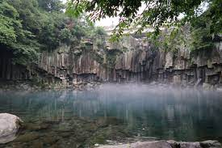

제주제트
빨간색의 날렵한 제주 제트는 보기만 해도 짜릿한데 뉴질랜드에서 직수입한 국내최초 검증된 보트로 최상의 안전을 추구하며 베테랑 조종사가 펼치는 최상의 스릴과 짜릿한 바다를 즐길 수 있도록 했다.
또 제주 제트를 타면서 대포주상절리를 바다에서 바라볼 수 있는 모습은 제주도 중문 여행의 최고의 선물이다.
ㄴ주소 : 서귀포시 대포로 172-5
ㄴ 운영시간 : 매일 9:00-18:00
ㄴ 가격 : 제트보트 25,000원
천제연폭포

천제연폭포는 신비로운 지형과 폭포가 장관을 이룬다.
비가 내린 바로 후라 물안개가 살포시 피어 오르는 모습이 마치 드라이 아이스를 풀어놓은듯 신비롭고 몽한적인 분위기를 연출하고 있다.
ㄴ 주소 : 서귀포시 천제연로 132
ㄴ 입장시간 : 평일 9:00-18:00 일몰시간에 따라 변경
ㄴ 이용요금 : 일반 2,500원 / 청소년, 어린이 1,350원
카페 더클리프

야자수가 아름다운 풍경을 만들어주고 그냥 보이는 풍경을 모든 게 여우로워보였었으며 이곳을 찾는 사람들 모두 다 한껏 여유스러움이 가득하다.
(제주특별자치도 서귀포시 중문관광로 154-17)